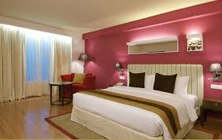
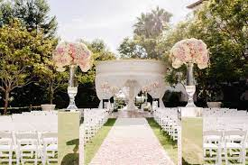

- Accomodation or lodge.

- Local and International food.
- Meeting and conference facilities.

- Parties or wedding facilities.

About White House Resort
AGENCY
Focus Online was founded in Kisumu Town in 2012 by Shaun Macdonald and Stanley Cornelius. Today, the team is made up of a diverse group of individuals, each offering a unique skill set and perspective that contributes to our ongoing success.
We invest in our staff to attract and retain the brightest talent, giving them the space and resources to grow and live their best life, while delivering exceptional results for our clients.
We invest in our staff to attract and retain the brightest talent, giving them the space and resources to grow and live their best life, while delivering exceptional results for our clients.
Measurability and return-on-investment drives everything we do. We believe that we win when our clients win. It’s what we’ve built our reputation on.

Waiter Food Delivery & Carryout
We offer the convenience of carryout & delivery of your favorite food. Browse restaurants, view photographed menus, pay securely, & track orders in real time.
Cafe Runner - Local Restaurant Food and Catering Delivery Service
caferunner.com
Local Restaurant Food Delivery and Catering Service, providing fast meal delivery from the best restaurants on the central coast of California.
location
White House Resort is located in Kisumu town near Tuskys Supermarket.
It is 100 metres fom the Central business district .Welcome all.
CONTACTS
You can contact the White House Resort management using the following contacts.
If in any case you would require assistance from us ,kindly contact the give contacts.We will ensure that you enjoy your stay at our facilities.
To those who like to watch football matches ,there is a big hall for you with DSTV in it.
We also provide a free Wi-Fi to our customers.
CONTACTS
- Manager:- 0710868403
- Assistant Manager:- 0713328016
- Secretary:- 0754238612